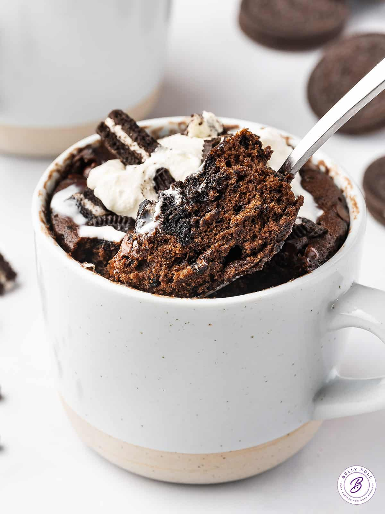

MyResipi
Resepi Mochi Guna 5 Bahan, Tak Payah Kukus Tetap Lembut Jadinya
23 Okt 2025
Aidasdibjaefc

RESEPI MOCHI
Bahan-bahan:
- 1 kampit tepung pulut (500g, boleh kurangkan kalau tak nak buat banyak)
- 1/2 cawan tepung gandum
- Air
Cara-cara:
- Satukan adunan mochi dan gaul sampai jadi doh (jangan telampau cair dan jangan telampau keras).
- Didihkan air di dalam periuk untuk rebus mochi, kemudian setelah air mendidih, perlahankan api.
- Uli doh kecil-kecil dan buat sedikit lubang untuk masukkan inti kacang merah.
- Setelah masukkan inti ke dalam mochi, gulung bulat dan masukkan ke dalam air mendidih.
- Masak mochi sehingga terapung sama seperti kuih buah melaka.
- Setelah mochi timbul, tapiskan mochi letak di dalam tempat penapis supaya permukaan mochi tidak basah.
- Golekkan mochi bersama tepung pulut yang sudah disangai. Siap!

Choc Chip Mug Cake